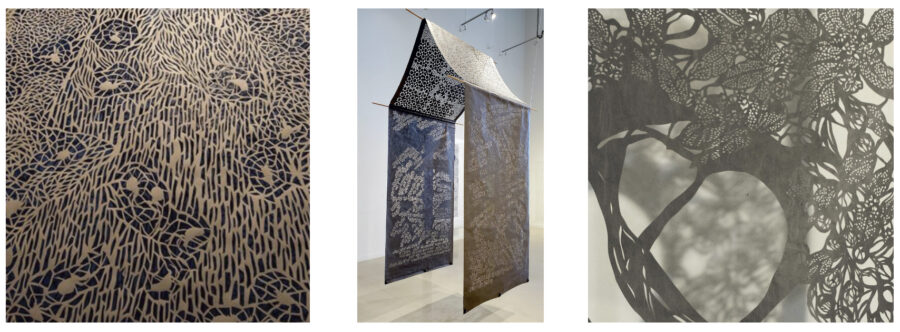

Sarah Nguyen: In Paper & Shadow
On View February 21 – March 15, 2026
Opening Reception Sunday, February 22nd, 1-4 pm
Sarah Nguyen is a mixed media artist, working primarily with paper. Storytelling is central to her hand-cut fiber panels and paintings. Her work has appeared in numerous national and international solo and group exhibitions and publications. Her work has been part of exhibitions in museums and festivals, including (but not limited to) Seattle’s Wing Luke Museum of Asian Pacific Experience, the Daum Museum, Pyramid Hill Sculpture Grounds and Museum, the Truman Museum, Cheekwood Estates & Gardens, and Kansas City’s 2018 Open Spaces. She has taken part in a number of artist residencies from around the world as a visiting artist and teacher, including Serbia, Bulgaria, Japan, and France, as well as the United States.
Sarah received her BFA in Illustration from Rhode Island School of Design and her MFA in Painting from the University of the Arts in Philadelphia.